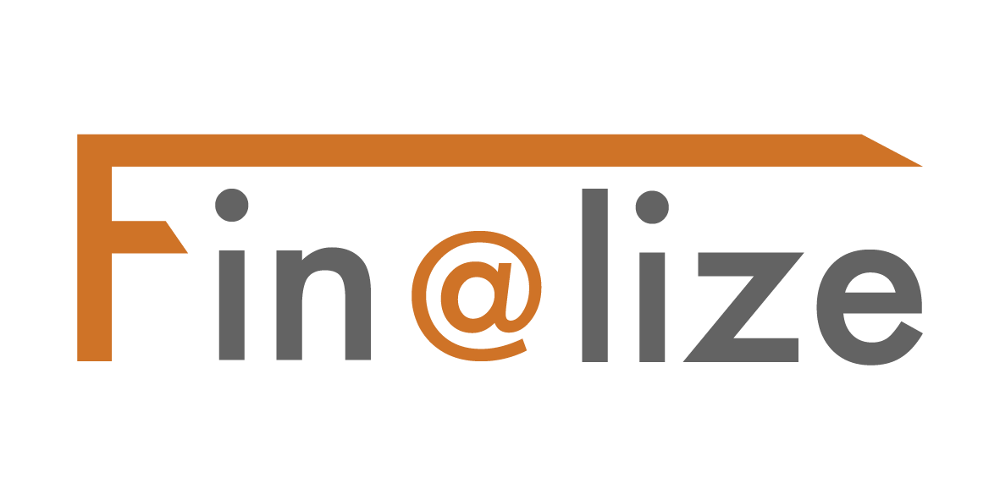

In the fast-paced and competitive business world, equipment financing has become a crucial component for companies seeking the necessary tools and technology to thrive. This comprehensive guide highlights the most important trends in business equipment financing and delves into their technical aspects. By understanding these trends, businesses can make informed decisions about equipment financing and outpace their competitors. Financial solutions, like those provided by Finalize, can also assist businesses with their equipment financing requirements by offering inventive approaches tailored to the distinct challenges of this sector.
Section I: The Current State of Professional Equipment Financing
1.1 Definition and Types of Equipment Finance
Equipment finance involves obtaining the required equipment for a business through leasing or financing options. Leasing entails renting the equipment for a predetermined period, while financing involves purchasing the equipment through a loan or other financial arrangement. Both options have their own advantages and challenges, with leasing providing flexibility and lower upfront costs, and financing allowing for ownership and possible tax benefits.
1.2 Advantages and Challenges of Equipment Finance
Both leasing and financing offer numerous benefits to businesses. Leasing lets companies preserve cash and avoid substantial upfront expenses, making it easier to manage budgets and cash flow. It also allows for the flexibility to upgrade equipment as technology advances or business needs change. Financing, conversely, enables businesses to build equity in the equipment, which can be used as collateral for future loans. Additionally, financing may offer tax benefits, as businesses can often deduct interest and depreciation expenses. However, equipment finance also presents challenges, such as navigating complex contracts, keeping up with technological advancements, and managing maintenance costs. Businesses must carefully consider their long-term goals and financial strategies before choosing between leasing and financing options.
1.3 The Role of Technology in Shaping the Industry
Technology has significantly impacted the equipment finance industry, with digitalization of exchanges, data-driven decision-making, and automation becoming increasingly essential. These advancements streamline processes and enable businesses to make better-informed decisions about their equipment finance needs. Some ways technology is transforming the industry include:
- Online lending platforms that offer faster, more efficient access to finance solutions
- Data analytics and machine learning algorithms that help businesses optimize their financing strategies
- Blockchain technology that enhances transparency and security in financing transactions
- Automation of routine tasks, such as credit checks and document processing, which can reduce the time and expense involved in securing equipment finance
Section II: Top Trends in Professional Equipment Financing
2.1 Growing Demand for Sustainable and Green Financing Options
Sustainable and green financing options are becoming increasingly popular as businesses aim to reduce their environmental impact and comply with regulatory requirements. This trend includes financing for renewable energy projects, such as wind turbines and solar panels, as well as electric vehicles and energy-efficient equipment. Factors driving this trend include:
- Government regulations and incentives promoting clean energy and sustainable business practices
- Increased consumer demand for eco-friendly products and services
- The potential for cost savings and improved operational efficiency through the adoption of green technologies
- Corporate social responsibility initiatives and the desire to enhance brand reputation
2.2 The Rising Importance of Automation and Data-Driven Decision-Making
Automation and data-driven decision-making are playing a more significant role in the equipment finance industry, with companies utilizing data analytics and machine learning algorithms to optimize their financing strategies. This shift enables businesses to make more accurate predictions about equipment needs and market trends, leading to improved financial outcomes. Key aspects of this trend include:
- The use of data analytics to assess credit risk, enabling more accurate and efficient underwriting processes
- The application of machine learning algorithms to identify patterns and trends in equipment usage, enabling businesses to optimize their equipment acquisition strategies
- The integration of data analytics tools into financing platforms, providing businesses with valuable insights to inform their decision-making processes
2.3 Shift Towards Alternative Finance Solutions and Platforms
Alternative finance solutions and platforms are gaining popularity in the equipment finance space, as businesses seek more flexible and accessible financing options. These alternatives include online lending platforms, peer-to-peer lending, and crowdfunding, which can provide businesses with quicker access to funds and a broader range of financing options. Factors contributing to the popularity of alternative finance sources include:
- The desire for greater flexibility and customization in financing arrangements
- The need for faster access to funds, especially for small businesses and startups
- The appeal of technology-driven platforms that streamline the financing process and offer greater transparency
2.4 The Impact of Global Economic Changes on Equipment Financing
Global economic changes, such as fluctuations in interest rates and the ongoing effects of the COVID-19 pandemic, are affecting equipment financing decisions. Businesses must stay informed about these changes and adapt their financing strategies accordingly to ensure they can continue to access the equipment they need to succeed. Some key considerations in this area include:
- The potential impact of rising interest rates on equipment financing costs, and the need to consider alternative financing options or strategies to mitigate this risk
- The ongoing uncertainty surrounding the global economic recovery from the COVID-19 pandemic, and the potential implications for equipment demand and financing availability
- The need to closely monitor geopolitical developments and their potential impact on equipment financing markets, such as trade disputes or changes in regulatory environments
Section III: A Closer Look at the Technical Aspects of Emerging Trends
3.1 Analysis of Tax Efficiency in Equipment Financing Decisions
Tax efficiency plays a critical role in equipment financing decisions, as businesses aim to maximize their financial benefits and minimize their tax liabilities. Some key factors to consider when assessing the tax implications of equipment financing include:
- The potential for interest deductions on equipment loans, which can reduce a business's taxable income
- The availability of tax credits or incentives for investing in energy-efficient or eco-friendly equipment
- The impact of depreciation on the tax treatment of equipment, with leased equipment usually treated as an operating expense, while purchased equipment may be subject to capital allowances or other tax benefits
- The importance of consulting with tax advisors or financial services specialists to ensure businesses fully understand the tax implications of their equipment financing decisions
3.2 Exploring the Variety of Equipment Financing Solutions and Providers
There is an extensive range of equipment financing solutions and providers available to businesses, from traditional banks and financial institutions to alternative lenders and online platforms. Some key factors to consider when choosing a financing solution or provider include:
- The types of equipment that can be financed, as some providers may specialize in specific industries or types of equipment
- The availability of flexible financing options, such as variable repayment terms, seasonal payment plans, or customized lease agreements
- The level of customer support and financial expertise offered by the provider, including the ability to provide tailored advice and guidance on equipment financing decisions
- The reputation and track record of the provider, including feedback from current customers and industry peers
3.3 Navigating the Complexities of Equipment Financing Contracts
Equipment financing contracts can be complex and challenging to navigate, especially for small businesses with limited resources. It is essential for businesses to thoroughly review and understand the terms and conditions of their financing agreements, as well as the potential risks and liabilities involved. Some key aspects to consider when reviewing equipment financing contracts include:
- The specific terms of the lease or loan, including the duration, repayment schedule, interest rates, and fees
- The rights and responsibilities of both parties, including maintenance and repair obligations, insurance requirements, and any restrictions on equipment usage or modification
- The potential consequences of defaulting on the agreement, such as repossession of the equipment, penalties, or legal action
- The availability of early termination or buyout options and any associated costs or conditions
Section IV: Finalize: The Future of Equipment Financing and Innovative Solutions
4.1 Introduction to Finalize and its Innovative Approach to Equipment Financing
Finalize is a leading provider of equipment financing solutions that combines financial expertise with cutting-edge technology to offer innovative and tailored solutions to businesses. Finalize aims to help businesses navigate the ever-changing landscape of equipment financing and empower them to grow and thrive in a competitive market.
4.2 The Role of Credilink, the Full-Web Financing Platform
One of Finalize's key innovations is Credilink, a full-web financing platform that streamlines the financing process and optimizes financing for sales. Credilink offers a multi-lender approach, providing businesses with access to a diverse range of financing options and enabling them to choose the best solution for their needs. Additionally, Credilink provides partners with valuable reporting tools, allowing them to monitor and analyze their financing activities and make data-driven decisions.
4.3 How Finalize Empowers Businesses through its Multi-Lender Approach and Reporting Tools
Finalize's multi-lender approach ensures businesses have access to a wide range of financing options, allowing them to choose the best solution for their unique needs. This approach helps businesses overcome the limitations of traditional financing sources and access more competitive rates and terms. Moreover, the reporting tools offered by Credilink provide businesses with valuable insights into their financing activities, enabling them to make better-informed decisions and optimize their financing strategies.
4.4 The Importance of Finalize's Experienced Team in Supporting Clients throughout the Financing Process
Finalize's experienced team is dedicated to supporting clients throughout the financing process, ensuring that businesses have access to the information and resources they need to make the best decisions. By prioritizing innovation, excellence, and leadership, Finalize is well-positioned to help businesses navigate the complex world of equipment financing and secure the tools and technology they need to succeed.
Conclusion
Equipment financing is a vital aspect of modern businesses, with several key trends shaping the industry. Understanding these trends and their technical aspects is essential for businesses looking to make well-informed decisions about their equipment financing needs. Staying informed about these trends and adapting to changes in the equipment financing landscape is critical to the long-term success of businesses in today's competitive market.
By leveraging innovative technologies, such as data analytics and online lending platforms, businesses can optimize their financing strategies and access the tools and equipment they need to grow and thrive. Finalize, as a leading provider of equipment financing solutions, is committed to helping businesses navigate the complex world of equipment financing. With its innovative Credilink platform, multi-lender approach, and experienced team, Finalize is well-positioned to support businesses in their equipment financing journey, ensuring they have access to the best financing options and resources to succeed in an ever-changing landscape.
To stay current with the latest developments in equipment financing and to gain valuable insights from an industry leader, follow Nathalie Taieb, the CEO of Finalize, on LinkedIn (https://www.linkedin.com/in/nathalietaieb/). Also, be sure to follow Finalize's LinkedIn page (https://www.linkedin.com/company/finalize-financing/) for updates on their latest financing solutions, industry news, and expert advice on navigating the complex world of equipment financing.
By following Nathalie Taieb and Finalize on LinkedIn, businesses can stay ahead of the curve in this quickly evolving industry and make well-informed decisions for their equipment financing needs. Don't miss out on the opportunity to learn from the best – connect with Nathalie Taieb and Finalize today.